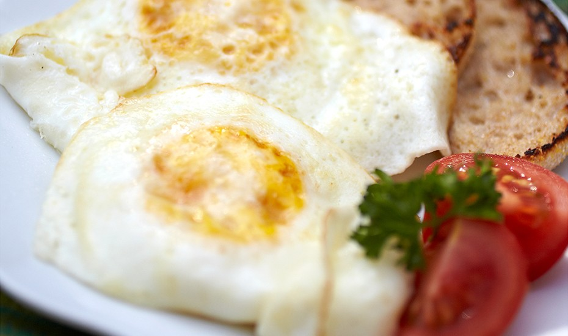

BASIC FRIED EGGS

Ingredients
-
Butter
-
Eggs (one per serving)
-
Salt & Pepper
Nutrional Information
Per Serving
Excellent Source: Choline
Good Source: Protein and Vitamin D
Calories: 105
Total Fat: 9 g
Saturated fat: 4 g
Polyunsaturated fat: 1 g
Monounsaturated fat: 3 g
Cholesterol: 196 mg
Sodium: 72 mg
Carbohydrates: 0 g
Dietary Fiber: 0 g
Protein: 6 g
Vitamin A: 388.3 IU
Vitamin D: 43.8 IU
Folate: 23.6 mcg
Calcium: 29.1 mg
Iron: 0.9 mg
Choline: 126.4 mg
Vitamin C: 0 mg
Vitamin E: 0.9 IU
Trans Fat: 0 g
Sugars: 0 g
Potassium: 70.1 mg
Magnesium: 6.1 mg
Selenium: 15.4 mcg
Phosphorus: 100.1 mg
Vitamin B12: 0.5 mcg
Vitamin K: 0.5 mcg
Vitamin B6: 0.1 mg
Copper: 0 mg
Vitamin B1 – Thiamin: 0 mg
Manganese: 0 mg
Zinc: 0.7 mg
Vitamin B2 – Riboflavin: 0.2 mg
Vitamin B3 – Niacin: 1.4 mg
Omega 3: 0.1 g
Omega 6: 1 g
Directions
-
For Over-Easy or Over-Hard Eggs: HEAT 2 tsp. butter in nonstick skillet over medium-high heat until hot.
-
BREAK eggs and SLIP into pan, 1 at a time. IMMEDIATELY reduce heat to low.
-
COOK SLOWLY until whites are completely set and yolks begin to thicken but are not hard, 5 to 6 minutes. SLIDE turner under each egg and carefully FLIP it over in pan. COOK second side to desired doneness. SPRINKLE with salt and pepper. SERVE immediately.
-
For Basted Eggs: COOK as for Over-Easy or Over-Hard Eggs, but use 2 Tbsp. butter. COOK until edges turn white. Begin BASTING eggs with butter from pan. COVER pan between bastings and CONTINUE COOKING until whites are completely set and yolks begin to thicken but are not hard.
-
For Steam-Basted Eggs: COOK as for Over-Easy or Over-Hard Eggs, but use 1 tsp. butter or a light coating of cooking spray. COOK until edges turn white. ADD 1 tsp. water to pan. Cover pan tightly. CONTINUE COOKING until whites are completely set and yolks begin to thicken but are not hard.